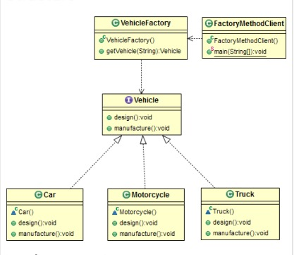

Factory Method（工厂方法）
使用场景
- 强制对接口而不是实现进行编码
- 将实例化的责任从客户端类转移到工厂方法
- 将实现与客户端程序分离
目的
定义用于创建对象的接口，但让子类决定实例化那个类，Factory Method允许将实例化延迟到子类。组件
- 接口或抽象类（public）
- 一组实现子类（private）
- 工厂方法（public）
结构体

代码实现
1. 创建一个接口，客户端可以根据这个接口编写代码，而无需担心内部实现.
package me.chunsheng.gof.factory_method;
/**
* @author wei_spring
* @projectName Doraemon
* @description: 创建类-> Vehicle
* @date 2020-05-2209:19
*/
public interface Vehicle {
void design();
void manufacture();
}
2. 创建一组实现子类，构造函数是protect，禁止new该对象.
package me.chunsheng.gof.factory_method;
/**
* @author wei_spring
* @projectName Doraemon
* @description: 创建类-> Car
* @date 2020-05-2209:20
*/
public class Car implements Vehicle {
Car() {
/* constructor is protected.
clients need to use the factory method */
}
@Override
public void design() {
System.out.println("Designing Car");
}
@Override
public void manufacture() {
System.out.println("Manufacturing Car");
}
}
package me.chunsheng.gof.factory_method;
/**
* @author wei_spring
* @projectName Doraemon
* @description: 创建类-> Truck
* @date 2020-05-2209:23
*/
public class Truck implements Vehicle {
Truck() {
/* constructor is protected.
clients need to use the factory method */
}
@Override
public void design() {
System.out.println("Designing Truck");
}
@Override
public void manufacture() {
System.out.println("Manufacturing Truck");
}
}
package me.chunsheng.gof.factory_method;
/**
* @author wei_spring
* @projectName Doraemon
* @description: 创建类-> Truck
* @date 2020-05-2209:23
*/
public class Motorcycle implements Vehicle {
Motorcycle() {
/* constructor is protected.
clients need to use the factory method */
}
@Override
public void design() {
System.out.println("Designing Truck");
}
@Override
public void manufacture() {
System.out.println("Manufacturing Truck");
}
}
3. 定义getVehicle()，客户端根据此获取对应对象，而不是直接new.
package me.chunsheng.gof.factory_method;
/**
* @author wei_spring
* @projectName Doraemon
* @description: 创建类-> VehicleFactory
* @date 2020-05-2209:26
*/
public class VehicleFactory {
public Vehicle getVehicle(String vehicleType) throws VehicleTypeNotFoundException {
if (vehicleType == null) {
return null;
}
Vehicle vehicle = null;
switch (vehicleType) {
case "car":
vehicle = new Car();
break;
case "truck":
vehicle = new Truck();
break;
case "motorcycle":
vehicle = new Motorcycle();
break;
default:
throw new VehicleTypeNotFoundException();
}
return vehicle;
}
}
4. 客户端代码，客户端只知道工厂方法和接口，客户端不需要自己new对象，实现了分离的效果.
package me.chunsheng.gof.factory_method;
import java.util.Scanner;
/**
* @author wei_spring
* @projectName Doraemon
* @description: 创建类-> FactoryMethodClient
* @date 2020-05-2211:05
*/
public class FactoryMethodClient {
public static void main(String[] args) {
Scanner scanner = new Scanner(System.in);
String vehicleType = scanner.nextLine().toLowerCase();
VehicleFactory vehicleFactory = new VehicleFactory();
try {
Vehicle vehicle = vehicleFactory.getVehicle(vehicleType);
vehicle.design();
vehicle.manufacture();
} catch (Exception e) {
e.printStackTrace();
}
}
}
Output
test
me.chunsheng.gof.factory_method.VehicleTypeNotFoundException: VehicleTypeNotFoundException,Please input right type.
at me.chunsheng.gof.factory_method.VehicleFactory.getVehicle(VehicleFactory.java:29)
at me.chunsheng.gof.factory_method.FactoryMethodClient.main(FactoryMethodClient.java:19)
优点
- 解耦，可以允许不改动客户端代码前提下，更换内部构件的实现
- 工厂方法为多个产品提供单点控制
- 可以使用单例，控制实例数和其可重用性
缺点
- 额外的抽象级别代码，降低了代码可读性
真实世界例子
租赁车辆，客户只需要提供车辆类型，客户无需了解车辆内部细节。
例子
- 内存缓存
- 文件缓存
- SQL语句，只需写出标准SQL，无需关心底层DB怎么实现。
Java SDK 例子
- java.util.Calendar.getInstance()
- java.util.ResourceBundle.getBundle()
- java.text.NumberFormat.getInstance()
- java.nio.charset.Charset.forName()
- java.util.EnumSet.of()
- javax.xml.bind.JAXBContext.createMarshaller()